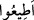
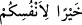

getirebilecek ya da Hakk’ın cevabını lâyıkıyla verecek kimdir? Allah’ın emri
mütenâhidir, ancak Allah’ın hakkına nihâyet yoktur. Zira emrin bakası, teklifin bakası
kadardır. Teklif ise dünyadadır ve dünya teklif sarayıdır. Ancak Hakk’ın bakası, zâtın
bakasıdır ve Zât mütenâhî değildir. Emrin vücûbu ortadan kalkar ancak Hakk’ın vücûbu
kalkmaz. Dünya geçer gider, emir dönemi de onunla gider. Ancak Hakk’ın dönemi asla
geçip gitmez. Bugün herkesin başında kendisine ne emredileceğinin düşüncesi vardır.
Rasuller ve nebiler kendi nübüvvet ve risâletlerine bakarlar. Melekler kendi ibâdet ve
tâatlerine bakarlar. Muvahhid, müctehid ve muhlisler kendi tevhid, îman ve ihlâslarına
bakarlar. Yarın Hakk’ın rubûbiyet perdeleri ortadan kaldırıldığında nebiler kendi
hallerinin kemaliyle ilim sözünü ortadan kaldırır ve “bizim ilmimiz yoktur” derler.
Melekût melekleri, ibâdet ettikleri kendi mâbedlerini ateşe verir; “Senin için hakkıyla
ibâdet edemedik” derler. Ârifler ve muvahhidler ise; “Seni hakkıyla tanıyamadık”
derler.
Onun öğütlerini “dinleyin” emirlerine “itâat edin”, sizlere rızık olarak verdiği
şeylerden sırf onun rızâsı için “ve mallarınızı Allah yolunda” harcamanızı emrettiği
yerlere “harcayın”.
İbn Abbas (r.a.)’dan bu âyet hakkında şöyle dediği rivâyet olunur: Buradaki
harcamadan yâni infaktan maksad zekâttır. Ancak zâhire göre burada emredilen harcama
sadece zekât değil genelde bütün “hayrî” harcamalardır. Aslında bu harcama da âyetteki
“
/etîû: itâat edin” emrinin şümûlüne dâhildir. Harcama fiilinin burada ayrıca özel
olarak zikredilmesinin sebebi o zamanlar infaka/harcamaya olan ihtiyacın çok
olmasından, malın canın yongası olmasından ve nefislerin mala çok düşkün olmasından
dolayıdır. İşte bundan hareketle mallar bazı yerlerde çocuklardan önce zikredilmiştir.
Hatta İmam Gazâli (r.h.) der ki: “Bazen mal sevgisi kötü âkıbetin sebeplerinden birisi
olabilir. Çünkü insanda mal sevgisi Allah sevgisine galip olduğu zaman, malı seven
kimse Allah’ın kendisini sevgilisinden ayıracağını bildiğinde kalbinde -Allah korusun-
Allah’a karşı bir buğz ve kin belirir. Nitekim görüldüğü üzere bir kimse dünyasını
oğlundan daha çok sevdiğinde oğlu o dünyalığı elinden almak istediğinde oğluna kızar
ve onun helâk olmasını ister.”
Âyet metninde yer alan “
” ibaresi mukadder bir “kâne”nin haberi olup
cümle olarak önce geçen emirlerin cevabı olur. Yâni şöyle denmiş olmaktadır;
“gücünüz yettiğince Allah’a isyandan kaçının, dinleyin, itâat edin ve mallarınızı
Allah rızâsı için harcayın ki bunlar sizin hayrınıza, iyiliğinize olsun.” Yahut “hayran”
kelimesi mahzuf bir fiilin mef’ûlü de olabilir. Buna göre âyetin mânâsı “ve kendi
nefsinize iyilik yapınız, nefsinize daha yararlı olana yöneliniz” demek olur. Bu takdirde
ifâde yukarda geçen emirlere sarılmaya teşvik ve o emirlerin mallardan ve evladlardan,
şehvet sevgisi, dünya süsü gibi yönelmiş oldukları şeylerden kendilerine daha hayırlı
olduğunu beyan ve açıklama olmuş olur.
“Kim nefsinin cimriliğinden korunursa” yâni Allah Teâlâ kimi nefsinin çamuruna